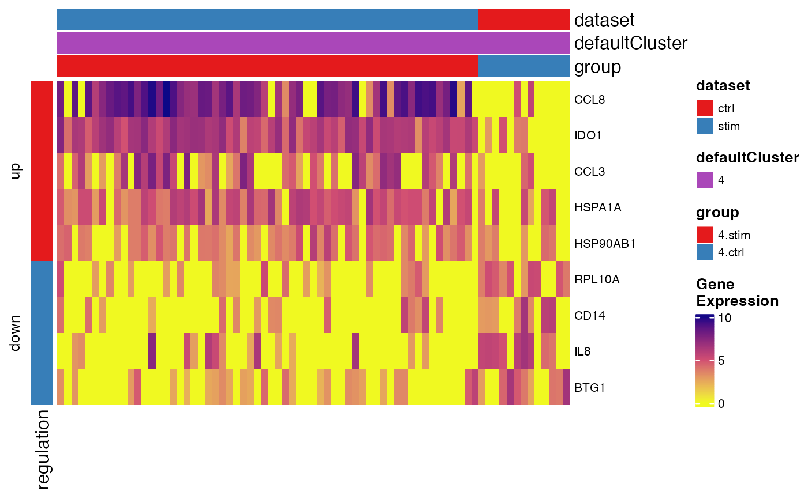

Create heatmap for pairwise DEG analysis result
Usage
plotPairwiseDEGHeatmap(
object,
result,
group = NULL,
topN = 20,
absLFCThresh = 1,
padjThresh = 0.05,
pctInThresh = 50,
pctOutThresh = 50,
downsampleSize = 200,
useCellMeta = NULL,
column_title = NULL,
seed = 1,
...
)Arguments
- object
A liger object, with normalized data and metadata to annotate available.
- result
The data.frame returned by
runPairwiseDEG.- group
The test group name among the result to be shown. Must specify only one if multiple tests are available (i.e. split test). Default
NULLworks with single-test result and raises error with split-test result.- topN
Maximum number of top significant features to be plot for up- and down-regulated genes. Default
20.- absLFCThresh
Hard threshold on absolute logFC value. Default
1.- padjThresh
Hard threshold on adjusted P-value. Default
0.05.- pctInThresh, pctOutThresh
Threshold on expression percentage. These mean that a feature will only pass the filter if it is expressed in more than
pctInThreshpercent of cells in the corresponding cluster. Similarly forpctOutThresh. Only applied when these metrics are available. Default50percent for both.- downsampleSize
Maximum number of downsampled cells to be shown in the heatmap. The downsampling is balanced on the cells involved in the test specified. Default
200.- useCellMeta
Cell metadata variable names for cell grouping. Default
NULLincludes dataset source and the default cluster.- column_title
Title on the column. Default
NULL.- seed
Random seed for reproducibility. Default
1.- ...
Arguments passed on to
.plotHeatmaptransposeLogical, whether to "rotate" the heatmap by 90 degrees so that cell information is displayed by row. Default
FALSE.showCellLabel,showFeatureLabelLogical, whether to show cell barcodes, gene symbols or factor names. Default
TRUEfor gene/factors butFALSEfor cells.cellAnnColList,featureAnnColListList object, with each element a named vector of R-interpretable color code. The names of the list elements are used for matching the annotation variable names. The names of the colors in the vectors are used for matching the levels of a variable (factor object, categorical). Default
NULLgenerates ggplot-flavor categorical colors.scaleLogical, whether to take z-score to scale and center gene expression. Applied after
dataScaleFunc. DefaultFALSE.trimNumeric vector of two values. Limit the z-score value into this range when
scale = TRUE. Defaultc(-2, 2).baseSizeOne-parameter control of all text sizes. Individual text element sizes can be controlled by other size arguments. "Title" sizes are 2 points larger than "text" sizes when being controlled by this.
cellTextSize,featureTextSize,legendTextSizeSize of cell barcode labels, gene/factor labels, or legend values. Default
NULL.cellTitleSize,featureTitleSize,legendTitleSizeSize of titles of the cell slices, gene/factor slices, or the legends. Default
NULL.viridisOption,viridisDirectionSee argument
optionanddirectionofviridis. Default"A"and-1.RColorBrewerOptionWhen
scale = TRUE, heatmap color will be mapped withbrewer.pal. This is passed toname. Default"RdBu".
Examples
defaultCluster(pbmc) <- pbmcPlot$leiden_cluster
#> ℹ Storing given cluster labels to `cellMeta(x)` field: "defaultCluster".
degTest <- runPairwiseDEG(
pbmc,
groupTest = "stim",
groupCtrl = "ctrl",
variable1 = "dataset",
splitBy = "defaultCluster"
)
#> ℹ Running DEG within: "0"
#> ℹ Calling pairwise DESeq2 Wald test
#> ✔ Calling pairwise DESeq2 Wald test ... done
#>
#> ℹ Running DEG within: "1"
#> ℹ Calling pairwise DESeq2 Wald test
#> -- note: fitType='parametric', but the dispersion trend was not well captured by the
#> function: y = a/x + b, and a local regression fit was automatically substituted.
#> specify fitType='local' or 'mean' to avoid this message next time.
#> ✔ Calling pairwise DESeq2 Wald test ... done
#>
#> ℹ Running DEG within: "2"
#> ℹ Calling pairwise DESeq2 Wald test
#> ✔ Calling pairwise DESeq2 Wald test ... done
#>
#> ℹ Running DEG within: "3"
#> ℹ Calling pairwise DESeq2 Wald test
#> ✔ Calling pairwise DESeq2 Wald test ... done
#>
#> ℹ Running DEG within: "4"
#> ℹ Calling pairwise DESeq2 Wald test
#> ✔ Calling pairwise DESeq2 Wald test ... done
#>
#> ℹ Running DEG within: "5"
#> ℹ Calling pairwise DESeq2 Wald test
#> ✔ Calling pairwise DESeq2 Wald test ... done
#>
#> ℹ Running DEG within: "6"
#> ℹ Calling pairwise DESeq2 Wald test
#> ✔ Calling pairwise DESeq2 Wald test ... done
#>
#> ℹ Running DEG within: "7"
#> ℹ Calling pairwise DESeq2 Wald test
#> ! Ignoring replicates (size in bracket) with too few cells: "others.ctrl.rep1 (2)"
#> ℹ Calling pairwise DESeq2 Wald test
#> ℹ Consider decrease minCellPerRep to exclude less replicates or/and lower nPsdRep to generate larger pseudo-replicates.
#> ℹ Calling pairwise DESeq2 Wald test
#> ✖ Error when computing on "7.stim": Too few replicates with more than 3 cells (`minCellPerRep`) for condition "others".
#> ℹ Calling pairwise DESeq2 Wald test
#> ! Empty result returned for this test.
#> ℹ Calling pairwise DESeq2 Wald test
#> ✖ Calling pairwise DESeq2 Wald test ... failed
#>
pbmc <- normalize(pbmc)
#> ℹ Normalizing datasets "ctrl"
#> ℹ Normalizing datasets "stim"
#> ✔ Normalizing datasets "stim" ... done
#>
#> ℹ Normalizing datasets "ctrl"
#> ✔ Normalizing datasets "ctrl" ... done
#>
plotPairwiseDEGHeatmap(pbmc, degTest, '4.stim')
#> ℹ Subsetting dataset: "ctrl"
#> ℹ Subsetting dataset: "stim"
#> ✔ Subsetting dataset: "stim" ... done
#>
#> ℹ Subsetting dataset: "ctrl"
#> ✔ Subsetting dataset: "ctrl" ... done
#>
